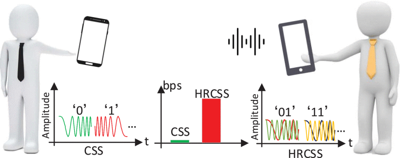

<div id="body">
    <div id="body_border">
    <div id="body_border1">
    <div style="border-bottom: 1px solid #D1D1D1;">
    <div style="border-bottom: 1px solid #959595;">
    <div class="header" style="text-align: center;">
    <div class="line4" style="font-family: Arial, Helvetica, sans-serif; text-align: center;"><span style="color: #000000;"><strong><span class="style17"><span style="background-color: #ffffff;"> 　<font size=6>Boosting Chirp Signal Based Aerial Acoustic Communication Under Dynamic Channel Conditions</font> </span></span><span style="background-color: #ffffff;">&nbsp;</span></strong></span></div>
    </div>
    </div>
    </div>
    <!--header 结束-->
    <div class="IndexList">
    <div id="selfIntroduction" class="style4">
    <p class="style1"><strong>Project Description:</strong></p>
    <p> Aerial acoustic communication attracts substantial attention for its simplicity and cost-effectiveness. Unfortunately, the preferred inaudible transmission has to strike a balance between the transmission rate and communication range, when the Bit-Error-Rate (BER) is under a certain threshold. Additionally, the performance of previous proposals can be deteriorated by dynamic channel conditions including near-far problem, device heterogeneity, and multipath fading. To this end, we propose a High-speed, long-range, and Robust Chirp Spread Spectrum (HRCSS) scheme for inaudible aerial acoustic communication under dynamic channels. HRCSS innovates in the definition of a loose orthogonality condition, and it leverages this orthogonality to overlap multiple chirp carriers in a single time duration to form a data symbol representing multiple bits, thereby substantially promoting the data rate. To further enhance system robustness in long communication ranges and dynamic channel conditions, we construct a lightweight rate adaptation algorithm and design a simple yet efficient normalization method. Experiment results reveal that HRCSS achieves a significant improvement in data rate over existing methods: it delivers 500 bps data rate with a BER of 0.24 percent at 10 m, and achieves 125 bps with zero BER at 20 m. Meanwhile, HRCSS can work adaptively under dynamic channel conditions while still retaining a BER below 3 percent. </p>
    <p><strong><span class="style1">Acknowledgement:</span> </strong></p>
    <ul>
    <li>For more information please visit our <a href="https://github.com/caichao/hrcss.git">git repository</a>
    <!--<p><strong><span class="style1">Updates &amp; News:</span> </strong></p>
    </li>
    </ul>
    </div>
    <div id="selfIntroduction" class="style4">
    <ul>
    <li><strong>2018/12</strong> The <span class="style18"> <strong>mRehab</strong></span> team wins the finalist award (5 out of 74 teams) in NYS Department of Health Aging Innovation Competitions.</li>
    <li><strong>2018/04</strong> The <span class="style18"> <strong>mRehab </strong></span>product starts the first in-home study in East Amherst, NY.</li>
    <li><strong>2018/03</strong> The <span class="style18"> <strong>mRehab </strong></span>student team wins the 2nd place award in UB Aging Innovation Challenges.</li>
    <li><strong>2018/02</strong> The android app of <span class="style18"> <strong>mRehab</strong></span> will be launched in early March 2018.-->
    <p><strong><span class="style1">People:</span> </strong></p>
    <ul>
    <li>Mr. Hengling Pu (Master Student, Electrical and Electronic Engineering) - Michigan State University</li>
    <li>Dr. Chao Cai (Associate Proffessor, College of Life Science &amp; Engineering) - Huazhong University of Science and Technology</li>
    </ul>
    <!--<p><strong><span class="style1">Collaborators:</span> </strong></p>
    <p>Dr. Feng Lin, University of Colorado Denver</p> -->
    <p><strong><span class="style1">Related Publications:</span> </strong></p>
    </li>
    </ul>
    </div>
    <div id="selfIntroduction" class="style4">
    <ul>
    <li>[1] C. Cai, Z. Chen, J. Luo, H. Pu, M. Hu and R. Zheng, "Boosting Chirp Signal Based Aerial Acoustic Communication Under Dynamic Channel Conditions," in IEEE Transactions on Mobile Computing, vol. 21, no. 9, pp. 3110-3121, 1 Sept. 2022 </li>
    <li>[2] C. Cai, R. Zheng and J. Luo, "Ubiquitous Acoustic Sensing on Commodity IoT Devices: A Survey," in IEEE Communications Surveys & Tutorials, vol. 24, no. 1, pp. 432-454, Firstquarter 2022. </li>
    <li>[3] C. Cai, R. Zheng, J. Li, L. Zhu, H. Pu, and M. Hu, "Asynchronous Acoustic Localization and Tracking for Mobile Targets," in IEEE Internet of Things Journal, vol. 7, no. 2, pp. 830-845, Feb. 2020. </li>
    </ul>
    </div>
    </div>
    </div>
    </div>
    </div>
    <!--body结束-->
